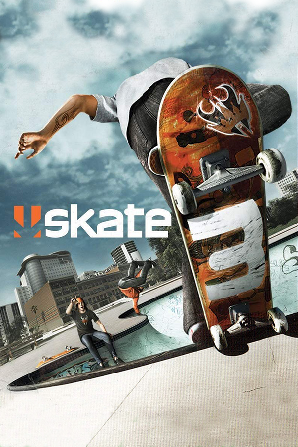

Skate 3
Skate 3
Details
|  | |
| Playtime | Not Played |
| Last Activity | Never |
| Added | 4/27/2025 10:06:45 |
| Modified | 4/29/2025 9:06:56 |
| Completion Status | Not Played |
| Library | Playnite |
| Source | |
| Platform | Sony PlayStation 3 |
| Release Date | 5/11/2010 |
| Community Score | 94 |
| Critic Score | 80 |
| User Score | |
| Genre | Sports |
| Developer | EA Black Box |
| Publisher | Electronic Arts |
| Feature | Multiplayer Single Player |
| Links | Wikipedia Official website MobyGames |
| Tag | [People] composer: Del the Funky Homosapien [People] composer: John King [People] composer: Mark Mothersbaugh |
Description
Skate 3 is a 2010 skateboarding video game, the third installment in the Skate series and the sequel to 2009's Skate 2, developed by EA Black Box and published by Electronic Arts. It was released worldwide in May 2010 for PlayStation 3 and Xbox 360. The game takes place in the fictional city of Port Carverton, which embraces skateboarding, unlike considering it a crime in the second game. The player character goes by the alias "The Legend". After failing to "Jump The Shark", their goal becomes creating a successful skateboarding team. It is the player's goal to sell one million boards by completing challenges. The game introduced some new features including new tricks, a park builder, and "Easy" and "Hardcore" modes instead of just "Normal" mode.
The game received generally favorable reviews from critics. In 2014, the game's popularity increased because of Let's Play channels on YouTube, showcasing the game's humorous ragdoll physics and glitches.
Gameplay
Skate 3 is a skateboarding extreme sports game set in an open world place and played from a third-person perspective. The game takes place in the fictional city of Port Carverton, which embraces skateboarding, unlike the "skateboarding is a crime" mentality portrayed in the second game. Although the location is a more colorful and friendlier place than Skate 2's de-saturated, and grainy streets, the gameplay provides a similar feel to the first and second games. Port Carverton is made up of three districts, Downtown, the University, and Industrial. Although the overall look of the city is very clean (except industrial) each district has its own unique designs and monuments. Downtown is full of slick rigid ledges and rails, while the University is full of banks and open areas. Industrial is the most unusual; it is home to a huge quarry that has bricks of stone.
Several notable skateboarding professionals appear throughout the game, such as Danny Way, Darren Navarette, Terry Kennedy, Eric Koston, Chris Cole, Pat Duffy, Rob Dyrdek and Jason Lee who voices the character Coach Frank.
In contrast with the original Skate, two new difficulty levels have been added: "Easy" and "Hardcore" modes. "Easy Mode" allows the player to perform tricks easier and provides greater control of the character. "Hardcore Mode" attempts a more realistic simulation of skateboarding and requires the player to perform tricks precisely. It adds a more realistic feel to the game unlike Easy. It would also be recommended for players who have more experience. The game also features an introductory "Skate School", where Coach Frank (Jason Lee) teaches players the basics of skateboarding. This feature is optional and the area can also be visited for unrestricted skateboarding.
Skate 3 features a "Skate.Park" mode that allows players to build custom skate parks and object dropper.
EA introduced three new online game modes: "1-Up", "Domination", and "Own The Lot". In "1-Up", players compete in turns to beat the other team's last score in a given time period. In "Domination", teams compete to gain the most points on set spots in an area within a time limit. In "Own The Lot", two or more players try to complete tasks before their time limit ends. Returning modes include "S.K.A.T.E" and "Hall of Meat".
Unlike the previous Skate games, Skate 3 has no offline multiplayer game modes on the disc. Players must purchase the "San Van Party Pack" downloadable content in order to access the offline "Party Play" mode.
Plot
Some time after Skate 2, the player character has proven that they are one of the best, and now goes by the alias "The Legend". They are attending the Port Carverton University. After a failed attempt to "Jump The Shark", a Thrasher challenge at the stadium, their next goal in life is to be a skateboarding mogul by making a team composed of skaters like them. Their goal is selling over a million boards while doing the same odd jobs around Port Carverton. When one million boards are sold, players are able to wear new styles of clothing for their skater and the plot ends there.
Development
Characters such as Joey Brezinski, Dan Drehobl, Benny Fairfax, Josh Kalis, Lizard King, Andrew Reynolds, Chris Haslam, Terry Kennedy, Chris Cole, Jason Dill, and Rob Dyrdek are featured in the game. New tricks were introduced, like the darkslide, underflip, and dropping into a ramp or bowl.
Music
The soundtrack contains 46 licensed tracks and was composed by John King of The Dust Brothers, Mark Mothersbaugh of Devo, and Del the Funky Homosapien. King composed the original score for the game. Mothersbaugh and Del the Funky Homosapien provided music for a different area in Port Carverton. When on "Interactive Mode", the list of the songs on the "Music Player" start to play as the player is in a challenge. When the player quits the challenge, the music stops. Once the skater has traveled far enough from the spot at which they just played in Career mode, the instrumental songs start to play again. The game also features music by composer Dan Diaz, who continued to work with the franchise after writing for Skate 2 and Skate It.
Reception
Skate 3 received "generally favorable reviews" from critics on both platforms according to the review aggregator Metacritic. In Japan, Famitsu gave both console versions each a score of three sevens and one eight for a total of 29 out of 40.
The A.V. Club gave the Xbox 360 version a B+. 411Mania gave the same console version a score of eight out of ten. The Daily Telegraph gave the same console version eight out of ten, but noted its difficult mechanics for mastering the game. Wired similarly gave it eight stars out of ten, praising control scheme, realistic setting and wide range of multiplayer options. The Escapist gave the same console version four stars out of five, also considering the game accessible for newcomers. Edge gave the PS3 version seven out of ten, being more critical of game similar to its predecessor.
EA shut down the game's servers around the end of 2016, but prior to the Electronic Entertainment Expo 2018 in June and in late 2019 after that year's expo, EA reactivated the servers, leading to speculation of either a remaster of Skate 3 or a new title in the Skate series.
Legacy and sequel
The game became a popular staple of Let's Play YouTube channels like PewDiePie, due to its humorous ragdoll physics and glitches resulting in the game being a high-selling game as late as 2014, requiring EA to issue a reprinting of the title. The game was also one of the most requested titles to be added to the Xbox One backwards compatibility feature, and was made backwards compatible in November 2016.
At the June 2020 EA Play event, a new Skate title was confirmed to be in development, commonly known by fans as Skate 4. This was later revealed to be a reboot of sorts, simply titled skate. After some time, a handful of trailers were sporadically released, one of which confirming that the game was going to be playable on PC. A playtest began in July 2022. Modders were able to create an online version of a pre-alpha build of the game, titling it Skate. Online, giving players not accepted into the playtest a taste of what could be the next Skate game.